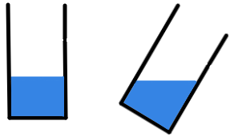
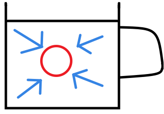
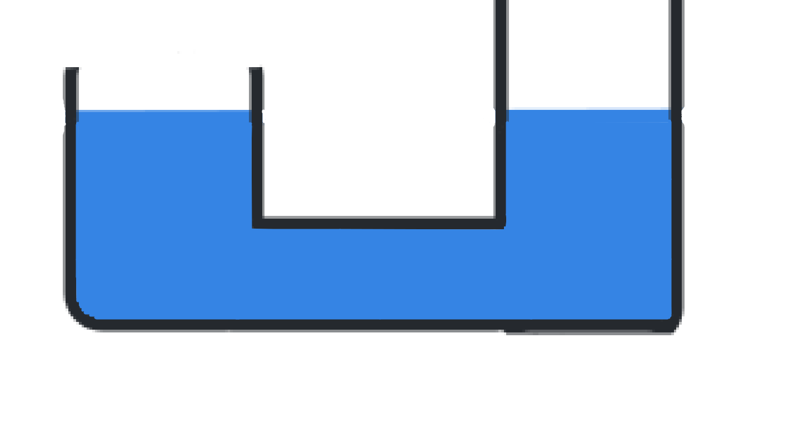

Kapaliny
Informace
- dají se přelévat
- dají se dělit
- nedají se stlačit
- nemají vlastní tvar
- mají vodorovnou hladinu
Kapaliny v klidu
- uvnitř kapaliny vzniká hydrostatický tlak
- hydrostatickým tlakem musí počítat potápěči, konstruktéři ponorek a skafandrů, stavitelé vodních staveb
Spojené nádoby
- společné dno
- vodorovná hladina všude stejná
- využití
- konev
- hadicová vodováha (sifon)
- plavební komory